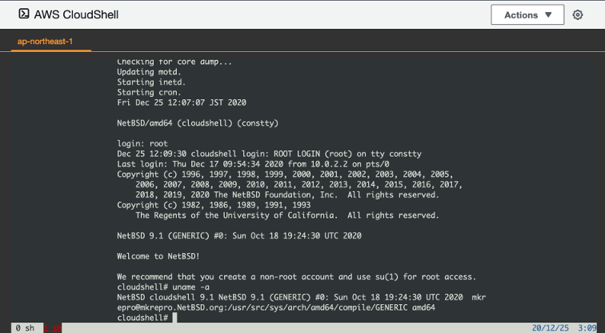
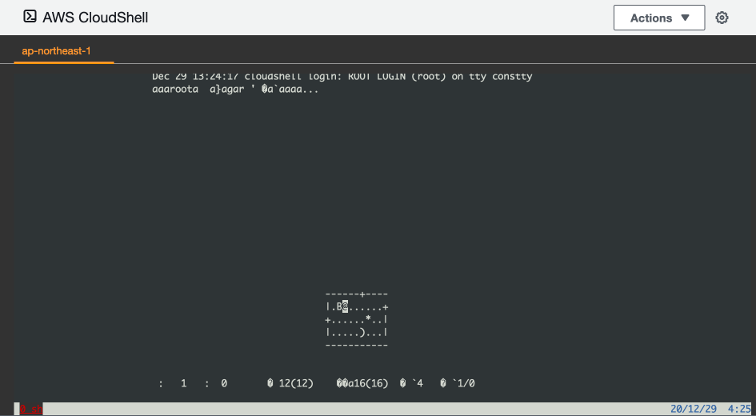
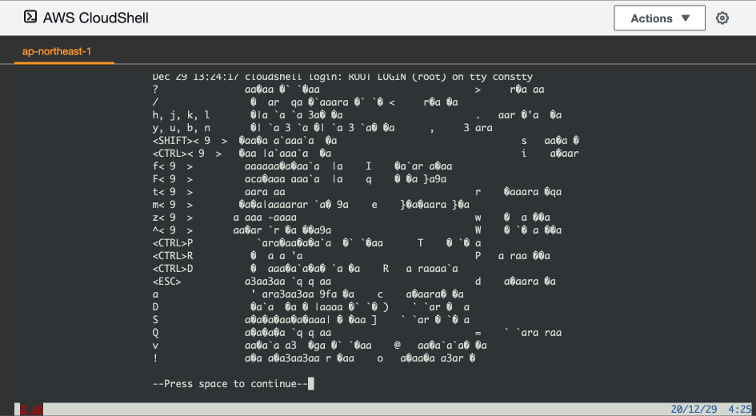
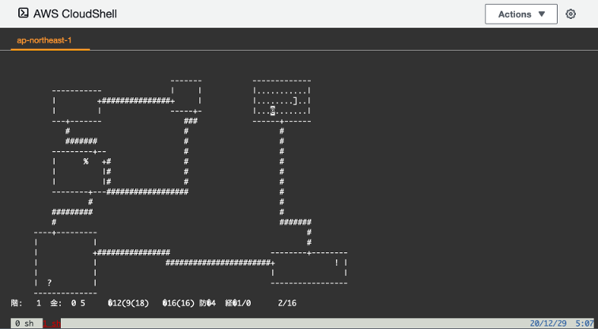
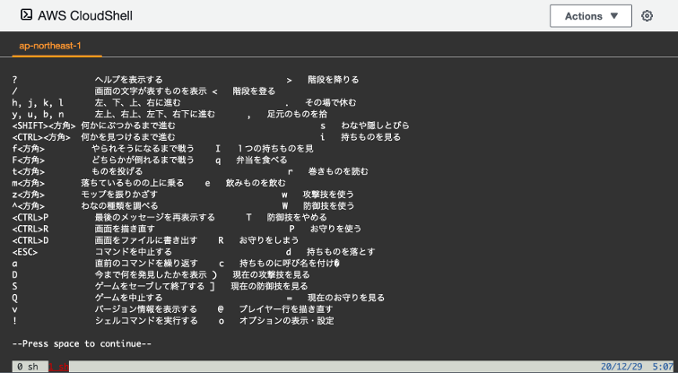

<br><br> ## <!-- <div style="border: thin solid; border-radius: 8px; padding: 8px; background: white;"><font color="midnightblue" style="text-transform: none;">--><span style="text-transform: none;">AWS CloudShellで<br>Leaf Rogueを動かす話</span><!-- </font></div> --> <br> @furandon_pig<br> <span style="font-size:60%;">https://furandon-pig.github.io/study-memo/docs/omoshiro_cloudshell/20201229.html</span><br> <span style="font-size:60%;"><a href="https://connpass.com/event/199259/">AWS CloudShell おもしろ選手権</a> (2020/12/29)</span>
### 自己紹介 <table border="0"> <tr> <td style="border-bottom: none;"> <img src="https://pbs.twimg.com/profile_images/2577120213/74t8gdwg96vj93vg46a4_200x200.png"> </td> <td style="border-bottom: none;"> <ul> <li><a href="https://twitter.com/furandon_pig">@furandon_pig</a> </ul> </td> </tr> <tr> <td> <br> </td> <td> <ul> <li>12月は<a href="https://qiita.com/advent-calendar/2020/freebsd">FreeBSD</a>や<a href="https://qiita.com/advent-calendar/2020/netbsd">NetBSD</a>、<a href="https://qiita.com/advent-calendar/2020/linux">Linux</a>のアドベントカレンダーにちょいちょい参加していました。 <li>今日はAWS CloudShellの上で<a href="http://games.roguelife.org/leaf/#about">Leaf Rogue</a>を動かしてみたという話をしようと思います。 </td> </tr> </table>
### AWS CloudShell * [AWS CloudShell](https://aws.amazon.com/jp/cloudshell/) * re:Invent 2020で発表された、ブラウザベースのシェル。 * ブラウザ上でbashが動くという話でしょ？ * (雑な理解) しかし世の中にはシェルさえあれば生きていけるという人も存在するのです...。
### シェルさえあれば生きていける人の例 * エディタを起動してコーディング、文書作成。 * エディタ内のメーラでメール読み書き。 * mhcでスケジュール管理。 * w3mでWebブラウズ。 * screen/tmuxでシェルの多重化。 これらがWebブラウザからも実現できると<br>より快適になりそう！
### なにかサンプルを動かしてみたい * だがしかし、いきなり環境を切り替えるのはちょっと...。 * 端末を派手に(？)つかうサンプルを動かして試してみたいところ。
# 🤔
# Leaf Rogue
### Leaf Rogueとは？ * [Leaf Rogue](http://games.roguelife.org/leaf/#about) * [Rogue](https://ja.wikipedia.org/wiki/%E3%83%AD%E3%83%BC%E3%82%B0) * ダンジョン探索型RPG * [curses](https://ja.wikipedia.org/wiki/Curses)という端末制御ライブラリを用いて画面描画する。 * Rogueにはメッセージ部分を分離した実装が存在する。 * メッセージの内容を[Leaf](https://ja.wikipedia.org/wiki/Leaf)というゲーム会社のキャラクターのものに置き換えたものがLeaf Rogue。
### が、ひとつ問題が...。 * Leaf Rogueのコードベースが古い...。 * autoconfが存在していない時代のコード。 * (なぜかFreeBSDにはパッケージがある) * Amazon Linuxでの修正は一苦労かも...。 * NetBSDでのビルド手順メモがあった。 * [Leaf Rogueを2016年のNetBSD上で動かしてみる。](https://qiita.com/furandon_pig/items/163f0809763cab6897b2) NetBSDで動かせばできそう！😃
### AWS ClousShellゎAmazon Linuxだょ... * [qemu](https://ja.wikipedia.org/wiki/QEMU)使えばいいじゃん(雑) * というわけで、Leaf Rogueを動かすための一連の手順を実施。
### まずはqemuで動かすOSの用意(1/2) * 手元のマシンで以下を実施。 * ディスクイメージを作成する。 * [NetBSD-7.0をインストールしてみる](https://qiita.com/furandon_pig/items/8b7d13a119067098d561) * Leaf Rogueをビルドして含めておく。 * ディスクイメージをAWS ClousShellにアップロードする。
### まずはqemuで動かすOSの用意(2/2) ```sh $ # OSインストールCDをダウンロードする。 $ curl -sLO http://ftp.jaist.ac.jp/pub/NetBSD/NetBSD-9.1/iso/NetBSD-9.1-amd64.iso $ $ # ディスクイメージを作成する。 $ qemu-img create -f qcow2 nbsd.img 800M $ $ # VMを起動してNetBSDインストール。 $ qemu-system-x86_64 \ -m 128M \ -boot order=d \ -cdrom NetBSD-9.1-amd64.iso \ -hdd nbsd.img ```
### AWS CloudShell側での手順 ```sh [cloudshell-user@ip-10-0-XXX-XX ~]$ sudo yum install -y qemu screen [cloudshell-user@ip-10-0-XXX-XX ~]$ [cloudshell-user@ip-10-0-XXX-XX ~]$ ls -lh nbsd.img -rw-rw-r-- 1 cloudshell-user cloudshell-user 672M Dec 24 07:37 nbsd.img [cloudshell-user@ip-10-0-XXX-XX ~]$ [cloudshell-user@ip-10-0-XXX-XX ~]$ cat start.sh #!/bin/sh export LANG=ja_JP.UTF-8 qemu-system-x86_64 \ -m 128 \ -boot order=c \ -hdd nbsd.img \ -net nic \ -net user,hostfwd=tcp::2222-:22 \ -nographic \ -curses \ -snapshot ```
### qemuでNetBSDを起動する <br> これで準備は整ったっぽい😃<br> あとはLeaf Rogueを動かすだけ！
## しかし、現実は常に厳しいものだったのです...🥺
## ！？ <br>
## 🥺 <br>
## 文字化けしている... * というよりかは、qemuの `-nographic -curses` ではマルチバイト文字を表示できないようだ...。 * これはもう<ruby>試合終了<rt>ゲームセット</rt></ruby>なのだろうか...🥺
#### あきらめたらそこで<ruby>試合終了<rt>ゲームセット</rt></ruby>ですよ...？(1/2) * AWS CloudShell側からVM(NetBSD)にsshできるようにしていたのだった😃 ```sh qemu-system-x86_64 \ ...中略... -net nic \ -net user,hostfwd=tcp::2222-:22 ``` * `~/.ssh/config` に以下の設定を追加。 ``` Host nbsd91 HostName 127.0.0.1 Port 2222 User cloudshell-user ```
#### あきらめたらそこで<ruby>試合終了<rt>ゲームセット</rt></ruby>ですよ...？(2/2) * VM(NetBSD)側では `cloudshell-user` 作成。 ``` # useradd -g users -G wheel -m -s /bin/ksh cloudshell-user # passwd cloudshell-user ``` これでどうじゃろか...🤔
### 無事に遊べるようになった！😭 
### 😭 
### こうしてAWS CloudShell上で<br>Leaf Rogueを動かすという試みは<br>無事に完遂できたのです...😇
### まとめ * AWS CloudShell上でLeaf Rogueを動かす話。 * 端末制御を派手に行うアプリの動作確認。 * qemuで動作させるのもアリ。 * イメージサイズは800Mくらいを目安にする。 * VMにsshできるようにしておくと良い。 * x86以外のアーキテクチャ向けOSを動かしてみるのも面白そう。
### ご清聴ありがとうございました😃
### 参考URL * 背景画像は「[巣栗渓谷から見たオリオン座の写真素材](https://www.pakutaso.com/20190329060post-19663.html)」(前田3号 様)撮影の画像を使用しています。